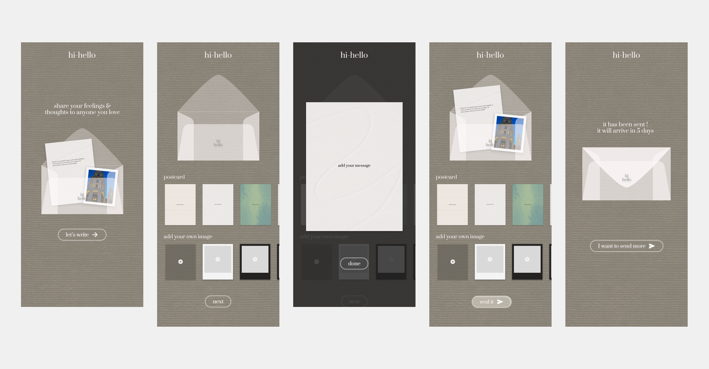
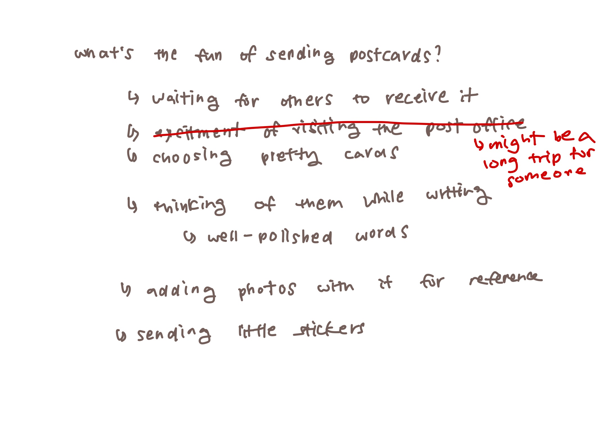
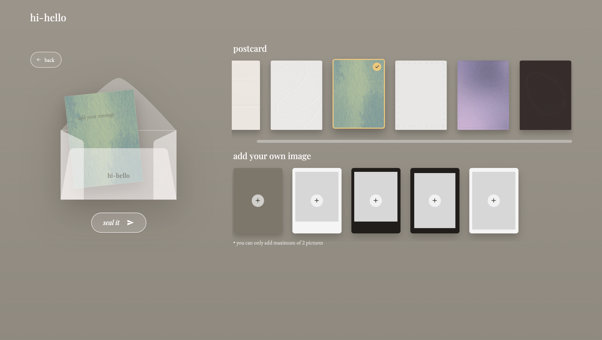
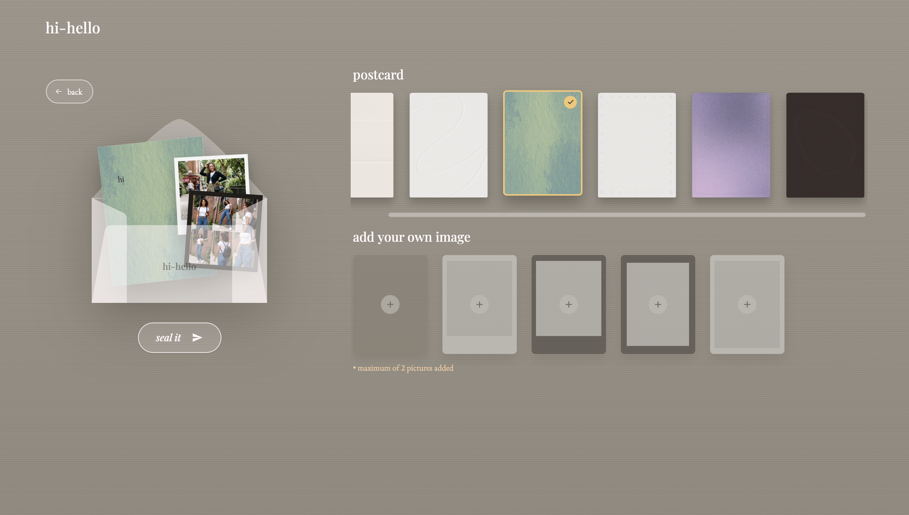
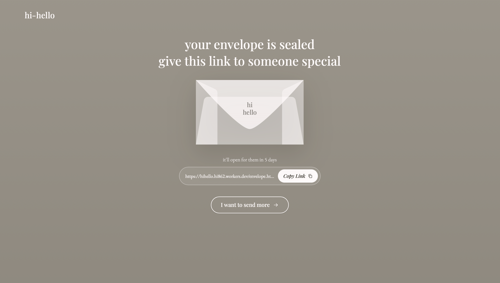
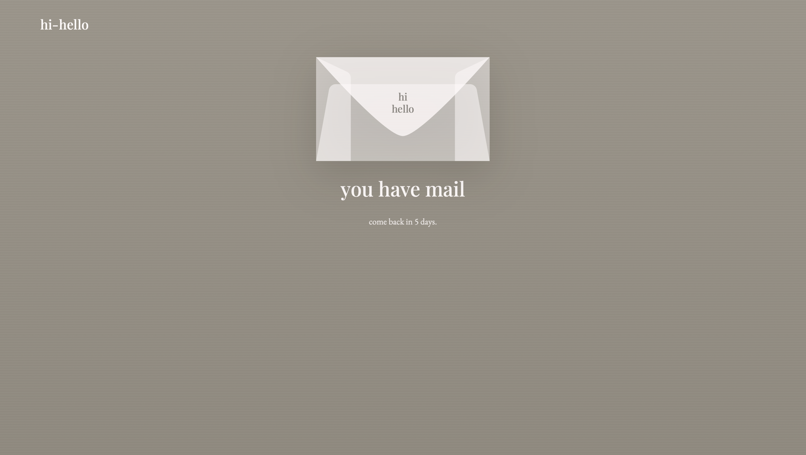
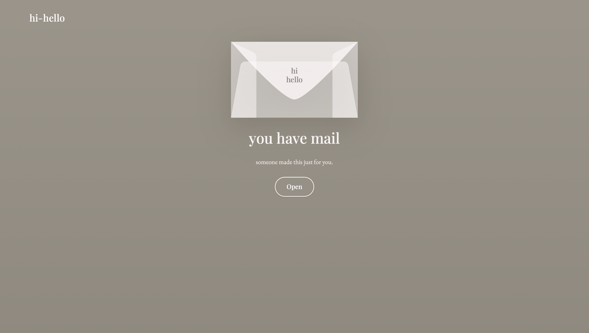
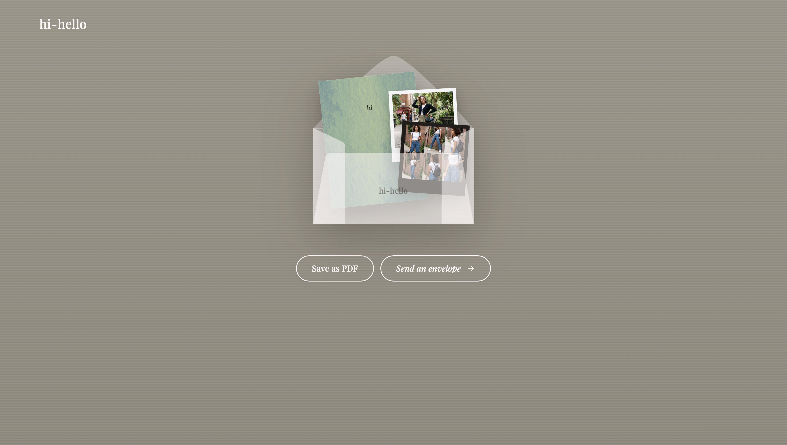

HiHello
HiHello is a digital letter-writing app. You pick a postcard style, write a note, attach up to two photos, then seal it before sending, with no edits after. I designed, coded, and deployed the whole thing solo, using it to explore how small rituals, not more features, can make a digital moment feel intentional.

- Role: Solo. Product Designer & Developer
- Timeline: 5 weeks
- Tools: Figma, Claude Code, Cloudflare
- Status: Live on the web and used by 4 people so far (my friends and me)
of physical letters into digital communication without bringing back the hassle of physical mail?
Instant messaging removed every step between thinking of someone and reaching them. That's mostly good, but it also erased the anticipation a physical letter still has. HiHello keeps the convenience of digital and puts a few of those steps back.
The goal wasn't to make digital communication slower for its own sake. It was to make the waiting part of the experience.
Before opening Figma, I brainstormed what makes sending a physical letter fun in the first place.

I listed every part of sending a physical letter, kept the parts worth keeping, and cut the ones that just drain your energy.
Sketching before building
Rough hand-drawn mockups let me test a few ritual mechanics quickly before deciding which ones actually earned their friction.
One message, one action
Before writing anything, you're already asked to think of one person.
Picking a card is picking a mood
I designed all six postcard styles myself in Figma. Picking one stands in for choosing stationery before you write, a small ritual that makes the letter feel chosen.

A hard limit of two photos, on purpose
Storage isn't the limit here, so the two-photo cap is a choice. A physical letter can't hold twenty pictures either.

"Seal it" rather than "send it"
The final action is sealing the letter, not sending a message. That word brings back the finality of dropping something in a mailbox. Once it's sealed, it's on its way.

The message is temporarily out of reach
The recipient is notified that something is waiting for them, but can't open it yet. Showing that the envelope exists, but not what's inside, is what turns the delay into anticipation instead of just a hidden message.

Finally ready to be read
When the wait ends, the recipient has to open the envelope themselves instead of just receiving a message. After that, they can save the letter as a PDF to keep.


To be upfront: I didn't do research to validate five days specifically. It's an intentional product experiment, not a finding. So far only four people have used it (my friends and me), which is too few to answer any of the questions below.
solo, end to end.
HiHello was designed in Figma and built as a fully responsive web app for mobile and desktop, then deployed on my own. I used AI-assisted development (Claude Code) to move faster through front-end implementation while making every interaction and layout decision myself.
"This project pushed me to design friction on purpose, which felt backwards since most of my work is about removing it. The five-day wait is a bet, and I think that's fine. Not every decision needs research behind it yet, but it does need a clear hypothesis and a plan to test it. Next I want to run the delay-length comparison above with real senders and recipients, to see whether the wait actually makes a letter land differently or just annoys people."